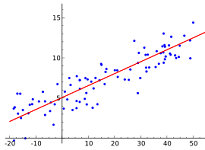
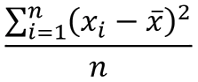

Probabilidad y Estadística
¡Hola!, en esta página web, colocaré información acerca de los 5 subtemas vistos en mi clase de Probabilidad y Estadística, los cuales son: tipos de variables, medidas de dispersión, distribución normal, prueba de hipótesis y correlación, a los cuales puedes acceder rápidamente usando la barra superior haciendo clic en el subtema al que deseas acceder. Además, añadí una sección para que me conozcan y también puedan agregar cualquier comentario o duda acerca de la página y su contenido.
Estoy muy agradecida por los aprendizajes que adquirí en esta materia durante el curso del semestre, espero poder comunicarles lo que he aprendido de una manera clara y eficaz para asegurarme de que conozco bien los temas de la asignatura. Como ya lo mencioné antes, cualquier comentario o duda pueden escribirla en la sección de comentarios al final de esta página web para leer lo que piensan y poder responder aquellas dudas que puedan surgir al momento de indagar sobre estos subtemas.
Tipos de variables
La estadística, como disciplina matemática, se basa en la recopilación, análisis e interpretación de datos. Uno de los aspectos fundamentales para entender y trabajar con datos es la clasificación de las variables. Las variables son características o propiedades que pueden variar y que son objeto de estudio en una investigación o análisis estadístico. En estadística, las variables se clasifican principalmente en dos tipos: variables cualitativas y variables cuantitativas.
Variables Cualitativas
Las variables cualitativas se centran en aspectos no numéricos o categóricos de los datos. Estas se subdividen en dos categorías:
- Nominales: representan categorías sin un orden específico. Ejemplos comunes incluyen el color de un automóvil, el género de una persona o el tipo de animal. No existe un valor numérico inherente en estas categorías. Por ejemplo: Color de ojos (Azul, Marrón, Verde).
- Ordinales: Aquí, las categorías tienen un orden específico o jerarquía, pero la distancia entre los valores no es significativa. Ejemplos incluyen rangos educativos, clasificaciones de películas o niveles de satisfacción. Por ejemplo: Nivel de satisfacción de un restaurante (Bajo, Medio, Alto).
Variables cuantitativas
Las variables cuantitativas implican medidas numéricas y se dividen en dos categorías:
- Discretas: Representan valores contables o enteros. Estas variables tienen puntos específicos y finitos, y no pueden tener valores intermedios. Ejemplos incluyen el número de estudiantes en una clase o la cantidad de productos vendidos. Ejemplo: Cantidad de hijos (0, 1, 2, ...).
- Continuas: Estas variables pueden tener un rango infinito y representan mediciones precisas. Pueden tomar cualquier valor en un intervalo dado. Ejemplos incluyen la altura de una persona, el peso de un objeto o el tiempo que lleva realizar una tarea. Ejemplo: Altura (en metros).
Otras consideraciones
- Variable Dependiente e Independiente: En el contexto de experimentos o estudios, se habla de variables dependientes (respuesta) e independientes (control).
- Variables Dummy: En análisis estadístico, especialmente en modelos de regresión, las variables dummy se utilizan para representar categorías cualitativas en forma de variables binarias (0 o 1).
- En la teoría de la probabilidad, las variables aleatorias representan resultados de un experimento aleatorio y pueden ser discretas o continuas.
Medidas de dispersión
Las medidas de dispersión son herramientas estadísticas que nos proporcionan información sobre la variabilidad o dispersión de un conjunto de datos. Mientras que las medidas de tendencia central, como la media y la mediana, ofrecen una idea de la ubicación central de los datos, las medidas de dispersión nos indican cuán dispersos o dispersas están esas observaciones alrededor de la media. Existen varias medidas de dispersión, entre las cuales se destacan la varianza, la desviación estándar, el rango y el rango intercuartílico. Cada una de estas medidas aporta información única sobre la dispersión de los datos.
Algunos ejemplos son:
- Varianza: La varianza es una medida que representa la media de los cuadrados de las desviaciones de cada dato respecto a la media aritmética. Es calculada mediante la fórmula  donde n es el tamaño de la muestra, xi (x sub-i) es cada observación, xˉ (x testada) es la media de las observaciones.
- Desviación estándar: La desviación estándar es simplemente la raíz cuadrada de la varianza y se denota por s (en caso de muestra, pero si fuera una población, se denotaría por la letra griega sigma minúscula). Proporciona una medida de dispersión en la misma unidad que los datos originales. Su fórmula es .
- Rango: El rango es la diferencia entre el valor máximo y el valor mínimo en un conjunto de datos. Aunque es fácil de calcular, el rango puede ser sensible a valores atípicos y no proporciona información detallada sobre la distribución interna de los datos.
- Coeficiente de variación: El coeficiente de variación mide la variabilidad relativa de un conjunto de datos y se expresa como un porcentaje. Se calcula dividiendo la desviación estándar por la media y multiplicando por 100. Tal como se ve en la siguiente imagen: .